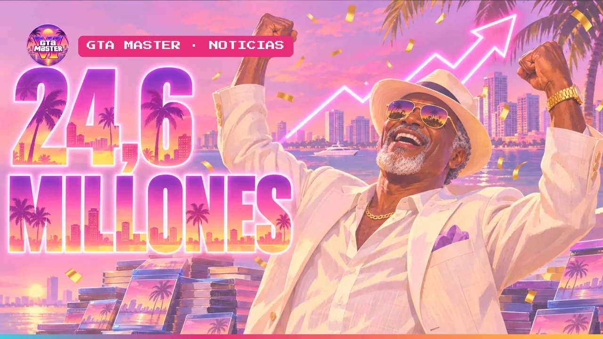

Noticias
Noticias
GTA 6 ventas: 24,6 millones de copias el primer día, según Sensor Tower

GTA 6 ventas: Sensor Tower calcula 24,6 millones de copias y 2.360 millones de dólares el primer día, el triple que GTA V. Lo oficial y lo estimado.
GTA 6 habría vendido unos 24,6 millones de copias en su primer día, por un valor cercano a 2.360 millones de dólares. Es la estimación de la consultora Sensor Tower, no una cifra oficial: Take-Two todavía no ha publicado sus propios datos, pero si se confirma, Grand Theft Auto VI habría triplicado en ingresos el estreno de GTA V.
La cifra ha ido creciendo a lo largo del día del lanzamiento. El jueves por la mañana, la agencia Reuters hablaba de 19,1 millones de unidades y unos 1.840 millones de dólares. Ya de madrugada en España, con el juego desbloqueado en todo el mundo, Sensor Tower actualizó el recuento hasta los 24,6 millones, según recogen Make Tech Easier y HappyGamer.
¿Cuántas copias ha vendido GTA 6?
Oficialmente, todavía no hay número. Lo que circula son estimaciones de Sensor Tower, que modela las ventas a partir de datos de las tiendas digitales y no tiene acceso a las cuentas de Rockstar. Así ha evolucionado su recuento:
| Momento | Copias estimadas | Ingresos estimados |
|---|---|---|
| Miércoles 18, mediodía (antes del desbloqueo) | 17,1 millones | 1.650 millones $ |
| Jueves 19, por la mañana | 19,1 millones | 1.840 millones $ |
| Jueves 19, final del día (madrugada del viernes en España) | 24,6 millones | 2.360 millones $ |
Hay un matiz importante: el total incluye todas las reservas acumuladas durante meses, así que no son 24,6 millones de copias compradas el mismo jueves. Make Tech Easier lo resume sin rodeos: «None of those numbers are official». Además, el rastreo de Sensor Tower solo cubre PlayStation y Xbox, que son por ahora las únicas plataformas del juego.
¿Cuánto ha vendido GTA 6 en PS5 y en Xbox?
Según el desglose de Sensor Tower que cita Make Tech Easier a partir de GameSpot, unas tres de cada cuatro copias se han vendido en PlayStation:
- PS5: unos 18,44 millones de copias y 1.770 millones de dólares.
- Xbox Series X|S: unos 6,15 millones de copias y 588 millones de dólares.
El reparto encaja con lo que se veía en las reservas, donde PlayStation ya iba muy por delante. A eso ayudó el paquete de PS5 con el juego y el hecho de que en Xbox no haya versión para Xbox One, igual que en PlayStation no la hay para PS4.
¿GTA 6 ha vendido más que GTA 5?
En su primer día, sí, y con mucha diferencia si las estimaciones aciertan. GTA V vendió 11,21 millones de copias y facturó 815,7 millones de dólares en sus primeras 24 horas en 2013, según el récord Guinness que recuerda Men's Journal; Take-Two contó entonces que superó los 1.000 millones en tres días.
| Juego | Primer día | Ingresos | Fuente del dato |
|---|---|---|---|
| GTA V (2013) | 11,21 millones | 815,7 millones $ | Take-Two / Guinness |
| GTA VI (2026) | 24,6 millones (est.) | 2.360 millones $ (est.) | Sensor Tower |
Ojo con la comparación: los datos de GTA V los dio la editora, mientras que los de GTA VI son de una empresa externa y meten las reservas en el mismo saco. Aun así, la distancia es enorme. Forbes llegó a titular que el juego ya superaba en un solo día lo que la película *La Odisea* ha recaudado en taquilla, aunque son métricas distintas.
¿Qué dice Take-Two de las ventas?
Poca cosa, y a propósito. Su consejero delegado, Strauss Zelnick, dijo en la presentación de resultados de principios de noviembre que no estaban listos para cantar victoria: «we still aren't ready to declare victory», según Reuters. Take-Two se ha limitado a describir la demanda como «unprecedented».
Make Tech Easier recoge, a partir de GameSpot, que Zelnick avanzó en el programa TBPN que la compañía compartirá datos oficiales pronto. Lo habitual en Take-Two es dar cifras en sus resultados trimestrales, así que el número bueno podría llegar en un comunicado o en la próxima presentación a inversores.
Mientras tanto, Wall Street echa sus cuentas. Según Men's Journal, que cita al New York Times, la firma Wedbush calcula unos 30 millones de copias y 3.000 millones de dólares antes de que acabe el año. Reuters añade dos datos de contexto: el desarrollo habría costado 1.000 millones de dólares o más, y la acción de Take-Two cayó en torno a un 1 % el jueves tras subir un 6 % la sesión anterior.
¿Por qué ha vendido tanto GTA 6?
Hay varios factores que explican el estreno:
- Trece años de espera desde GTA V, con un público que ha crecido con GTA Online.
- Las críticas: el juego llegó con un 99 en Metacritic, algo que ningún otro título había conseguido.
- El marketing: Sensor Tower atribuye al pase de *An Extended Look* en Netflix en agosto un salto de seis veces en las reservas, según Reuters.
- El desbloqueo global simultáneo, que en España llegó a medianoche y concentró las compras en pocas horas.
Y eso sin versión de PC ni modo online con fecha, dos cosas que todavía no tienen día y que suelen alargar mucho la vida comercial de un GTA. Si estás pensando en comprarlo, en nuestra guía tienes el precio de cada edición: 79,99 € la estándar y 99,99 € la Ultimate.
¿Qué significa para el jugador?
A corto plazo, servidores muy cargados y mucha gente jugando a la vez, lo que ya se notó en las descargas del primer día. A medio plazo, un éxito así garantiza que Rockstar tenga margen para cuidar el juego y el online durante años, como pasó con GTA V. Si ya estás en Leonida, en nuestro canal repasamos los secretos y easter eggs que te puedes estar perdiendo.
En GTA MASTER actualizaremos esta noticia en cuanto Take-Two publique su cifra oficial.


Comentarios
Los comentarios funcionan con Disqus: puedes entrar con Google, Facebook, X o tu email. Al pulsar el botón se conecta con Disqus, que usa sus propias cookies. Más información en nuestra política de privacidad.